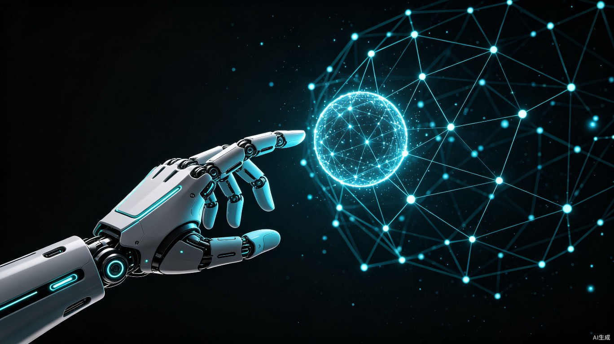
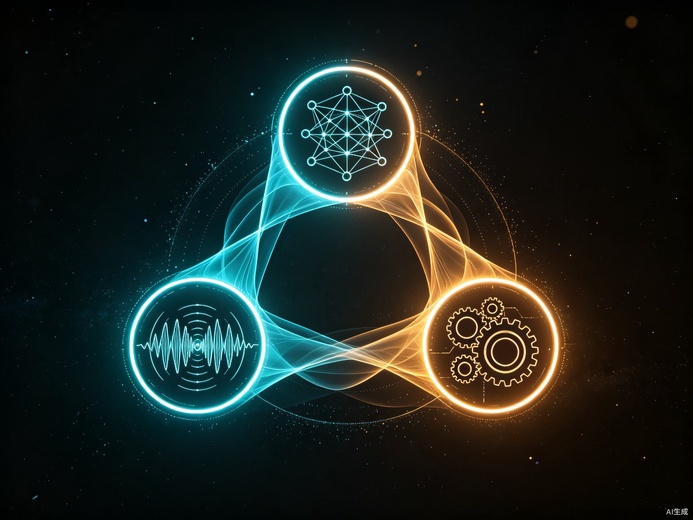
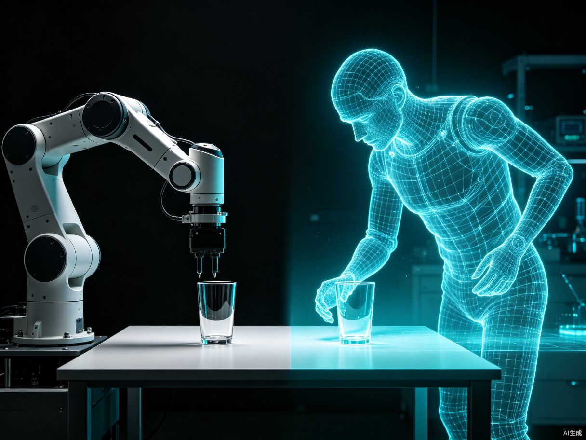
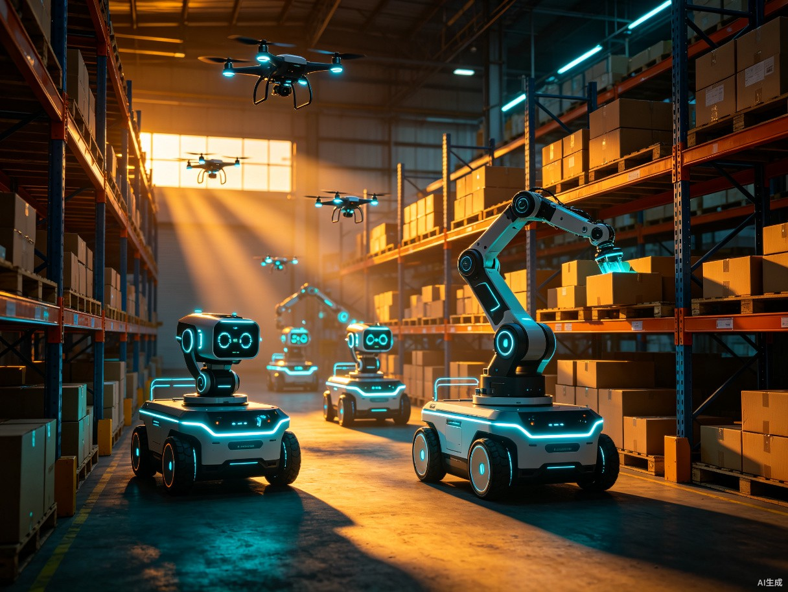

过去两年，生成式 AI 在屏幕里创造了奇迹：写文章、画画、写代码、做视频。但所有这些奇迹都停留在比特世界。2026 年，一道新的分水岭正在浮现——AI 开始学会动手改变原子世界。这就是物理 AI（Physical AI）。
当机器人不再只是按预设程序重复动作，而是能看见环境、理解意图、推理下一步、动手完成任务，整个制造业、物流业、服务业的生产方式都将被重写。本文将从定义辨析、技术架构、世界模型、NVIDIA Cosmos 3 到产业落地，系统拆解物理 AI 的全貌[1][2]。
一、什么是物理AI
物理 AI 的定义正在快速收敛。综合 2025-2026 年学术界与产业界的共识，可以这样概括：物理 AI 是能让机器在真实物理环境中自主感知、推理、决策并执行动作以完成任务的智能系统[1]。
这一定义里有四个关键词，拆开看才能理解它与传统机器人的本质区别：
传统机器人是「感知—执行」的二元结构：传感器采集数据，控制器按预设规则驱动执行器。物理 AI 在中间插入了「推理—决策」两个环节，让机器从「按指令做事」升级为「按理解做事」。这个看似微小的变化，背后需要一整套全新的技术栈支撑。
二、物理AI的技术架构
物理 AI 不是单一技术，而是一个由感知、认知、控制三大子系统构成的完整技术栈。这三层各自依赖不同的技术，又通过数据流紧密耦合。

三层之间的数据流是双向的：感知层把环境状态送入认知层，认知层把动作计划送入控制层，控制层执行后产生新的环境状态，再回到感知层——形成一个闭环。这个闭环的频率决定了机器人的反应速度：工业机械臂通常需要 100-1000Hz 的控制频率，人形机器人则因任务复杂度不同在 10-100Hz 之间[1]。
三、世界模型：物理AI的大脑
如果说感知层是物理 AI 的眼睛和皮肤，控制层是手脚，那么世界模型就是物理 AI 的大脑。它是物理 AI 能否从「按程序执行」跃迁到「按理解行动」的关键。
世界模型的核心能力是预测：给定当前环境状态和一个候选动作，预测接下来会发生什么。这听起来简单，但在物理世界里极其困难——一个水杯被推到桌边会不会掉？掉下去会不会碎？碎了之后碎片会飞到哪里？这些都需要对重力、摩擦力、材料强度、碰撞动力学的深刻理解[3]。

与传统大语言模型「预测下一个词」不同，世界模型预测的是下一个物理状态。这个范式跃迁被许多研究者视为通往物理 AGI 的核心桥梁——它让 AI 从「会说」走向「会做」[3]。
四、术语辨析：物理AI vs 具身智能 vs 机器人学
物理 AI、具身智能、机器人学三个概念经常被混用，但它们有清晰的边界。
| 维度 | 机器人学 | 具身智能 | 物理 AI |
|---|---|---|---|
| 关注重点 | 机械结构、控制算法 | 智能与身体的耦合 | AI 模型驱动的感知推理执行 |
| 核心方法 | 控制论、运动学 | 学习与交互 | 大模型 + 世界模型 |
| 是否需要实体 | 必须 | 通常需要 | 不一定（可仿真） |
| 技术成熟度 | 成熟 | 发展中 | 快速突破期 |
| 关系 | 物理 AI 的硬件基础 | 物理 AI 的理论框架 | 机器人学 + 具身智能的 AI 升级 |
简单说：机器人学提供身体，具身智能提供理论，物理 AI 提供大脑。三者不是替代关系，而是层层叠加。一个完整的物理 AI 系统，必然建立在机器人学的硬件基础之上，遵循具身智能的交互原则，并由大模型驱动的认知能力赋予真正的「智能」[2]。
五、NVIDIA Cosmos 3：物理AI的安卓时刻
如果说 2024 年 1 月发布的 Cosmos 1 是物理 AI 基础设施的奠基，2025 年 6 月的 Cosmos 2 是世界模型的工程化，那么 2026 年 GTC 上黄仁勋发布的 Cosmos 3，被业界称为物理 AI 的「安卓时刻」[2]。
Cosmos 3 的核心定位是「物理 AI 的操作系统」——它不造机器人，而是提供一套让任何团队都能快速开发物理 AI 应用的完整工具链。其关键能力包括：
Cosmos 3 的真正意义不是某个模型多强，而是它把物理 AI 的开发门槛从「需要一支百人团队」降到了「三五个人的小团队也能上手」[2]。这就像 2008 年 Android 把手机操作系统开发门槛大幅降低后，催生了百万级 App 生态一样——Cosmos 3 有望催生百万级的物理 AI 应用。
# Cosmos 3 物理AI开发示例：分拣任务 from cosmos3 import WorldModel, RobotPolicy, SimEnv # 1. 加载预训练世界模型 world_model = WorldModel.from_pretrained("nvidia/cosmos3-wfm-7b") # 2. 微调到自己的分拣场景 world_model.finetune( data="./dataset/sorting_scenes/", steps=10000, physics_consistency=True ) # 3. 创建仿真环境 + 加载机器人策略 env = SimEnv.create(scene="warehouse_sorting") policy = RobotPolicy.from_gr00t("gr00t-n1") # 4. 在世界模型中规划动作并执行 for step in range(100): state = env.get_observation() action = policy.plan(state, world_model=world_model) env.execute(action)
上面这段伪代码展示了 Cosmos 3 的开发范式：加载基础模型 → 微调到自己的场景 → 在仿真中规划与执行。整个流程从过去的数月缩短到数周，甚至数天。
六、产业落地：物理AI正在改变什么
技术再强，最终要落地到产业才能产生价值。2026 年，物理 AI 已经在四个领域形成规模化应用。

| 场景 | 核心能力 | 代表企业 | 成熟度 |
|---|---|---|---|
| 工业制造 | 柔性分拣、瑕疵检测、自适应装配 | 发那科、ABB、宇树 | 规模商用 |
| 智慧物流 | 无序仓库取货、动态路径规划 | 亚马逊、京东、极智嘉 | 规模商用 |
| 自动驾驶 | 端到端驾驶决策、长尾场景预测 | Waymo、特斯拉、小鹏 | L3+ 落地 |
| 家庭服务 | 家务执行、老人陪护、安全看护 | 特斯拉 Optimus、宇树 H1 | 早期验证 |
工业与物流是物理 AI 最先成熟的领域，因为场景相对封闭、任务定义清晰、容错成本可控。自动驾驶紧随其后，世界模型正在成为端到端自动驾驶的核心组件——它让车辆能「预演」未来 5 秒的交通场景，而不仅仅是识别当前路况[1]。
家庭服务是最被期待但也最难的领域。难度不在于技术，而在于安全性与泛化性——家庭环境的不可控性远高于工厂，一个错误动作可能直接伤害人类。这也是为什么人形机器人家用化被普遍认为还需要 3-5 年的成熟期。
七、挑战与瓶颈
物理 AI 的前景令人兴奋，但把它从「能演示」推到「能赚钱」之间，还有几座大山要翻。
这些挑战并非无解，但每一个都需要时间、资金和跨学科协作。2026 年的状态是：核心算法已经跑通，工程化与规模化正在加速，但距离真正的通用物理 AI 还有 3-5 年的窗口期[4]。
八、结语
物理 AI 不是又一个技术概念，而是 AI 从屏幕走向真实世界的临界点。当智能学会动手，它改变的就不再只是信息流，而是物质流——工厂怎么生产、物流怎么运转、家庭怎么生活、城市怎么治理。
世界模型是这条路上最关键的基石。它让 AI 从「预测下一个词」进化到「预测下一个物理状态」，从「会说」进化到「会做」。NVIDIA Cosmos 3 把这条路的门槛大幅降低，让百万级开发者有机会参与物理 AI 的生态建设——这正是「安卓时刻」的真正含义[2]。
当然，挑战依然巨大：Sim-to-Real 鸿沟、数据稀缺、算力瓶颈、安全治理、长尾泛化、硬件成本——每一座山都需要翻越。但方向已经清晰，基础设施已经就位，参与者在快速增加。物理 AI 的黄金时代，刚刚开始。
对于从业者来说，现在最值得做的事不是等一个完美的机器人出现，而是选定一个垂直场景，用现成的世界模型和工具链，把一个真实任务跑通。在物理 AI 的早期，场景理解比模型能力更稀缺，先跑通的人将占据生态位。当通用物理 AI 真正到来时，这些场景积累就是最深的护城河。
参考资料
- What is Physical AI? A comprehensive guide，Towards Data Science，2025-08-14 https://towardsdatascience.com/what-is-physical-ai
- 物理AI的安卓时刻：NVIDIA Cosmos 3 深度解析，CSDN 博客，2026-03 https://blog.csdn.net/cosmos3_deep_dive
- 世界模型：通往物理AGI的桥梁，搜狐科技，2025-12-10 https://m.sohu.com/world_model_agi
- 物理AI产业落地现状与挑战，头条报道，2026-06 http://m.toutiao.com/group/7663411886012105255/